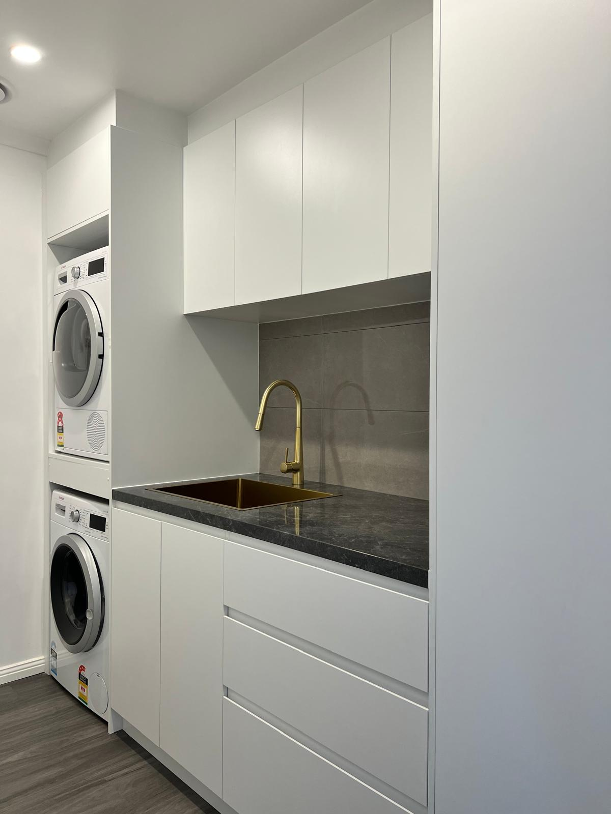
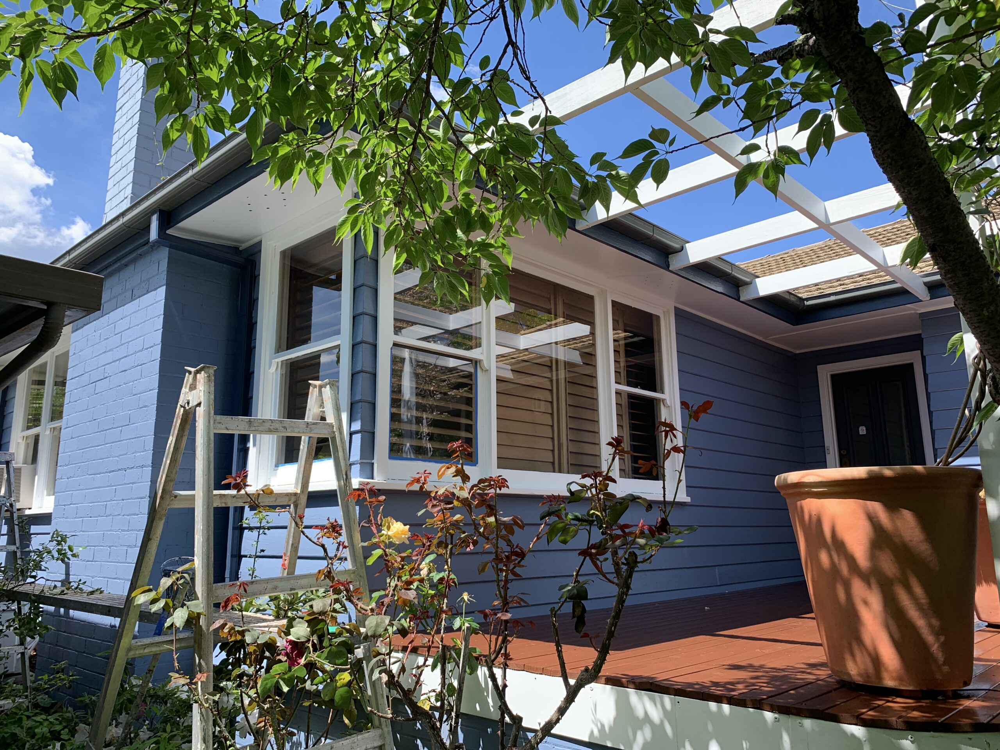
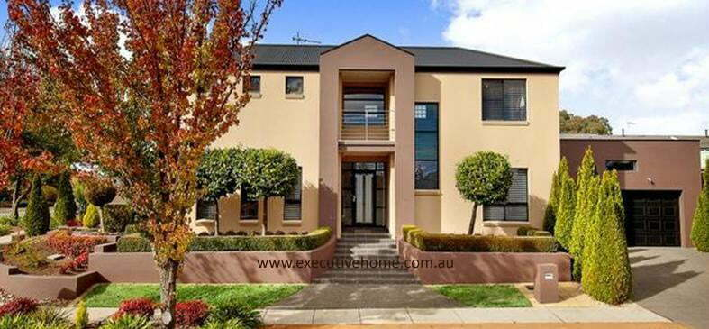

Roof repairs
Leak tracing, tile replacement and roof restoration.
From weather damage to tired ridge capping, roof work should protect the property before small issues become larger repairs.
Projects
Wally's Executive Home Management handles the kind of property work that often crosses several trades: fixing the cause, repairing the damage and finishing the space properly.
From weather damage to tired ridge capping, roof work should protect the property before small issues become larger repairs.

Interior work can include damaged plaster, worn paint, preparation, finish advice and the details that make a room feel complete.

Outdoor timber work needs practical repair choices, solid workmanship and materials suited to Canberra conditions.
Project clarity
Leak, worn paint, water damage, rot, cracked plaster or a dated room.
Show whether the work needed roofing, carpentry, plastering, painting, tiling or multiple trades together.
Name the trades involved and how Wally coordinated the work.
Show the repair, finish or improvement clearly so the next customer can understand the standard.
Current site gallery


